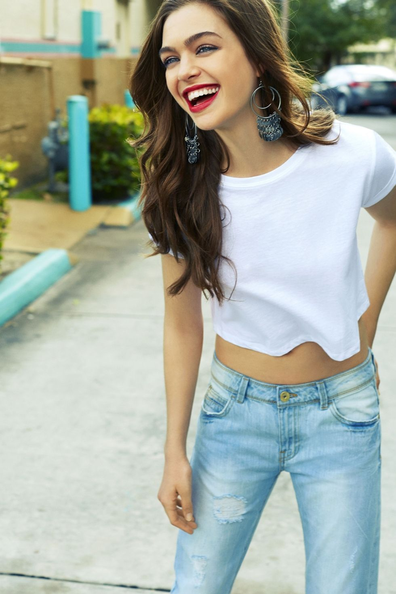
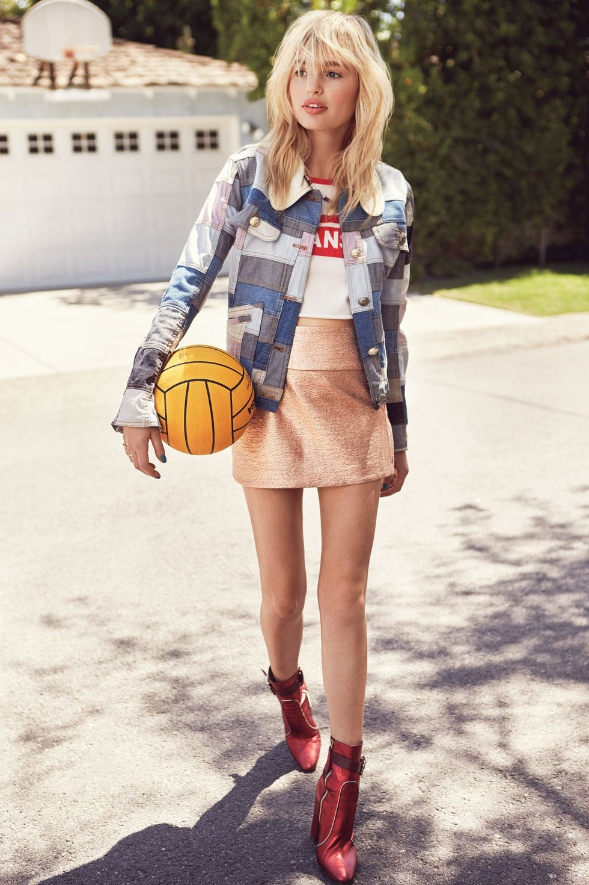
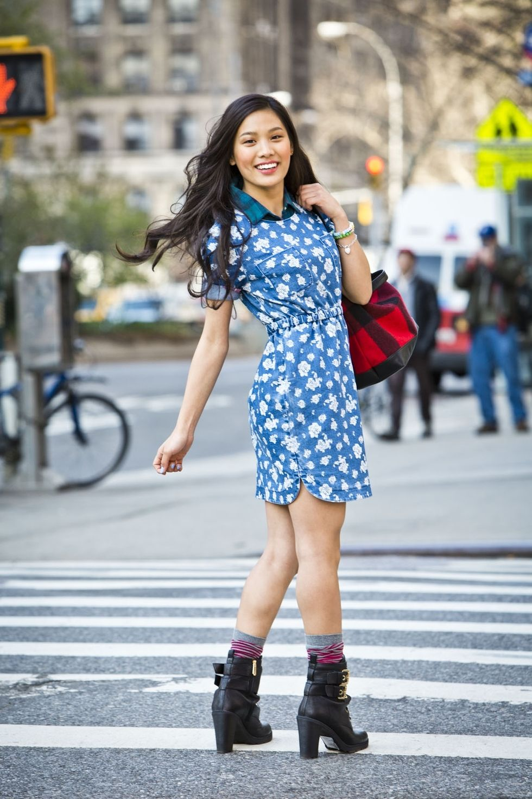
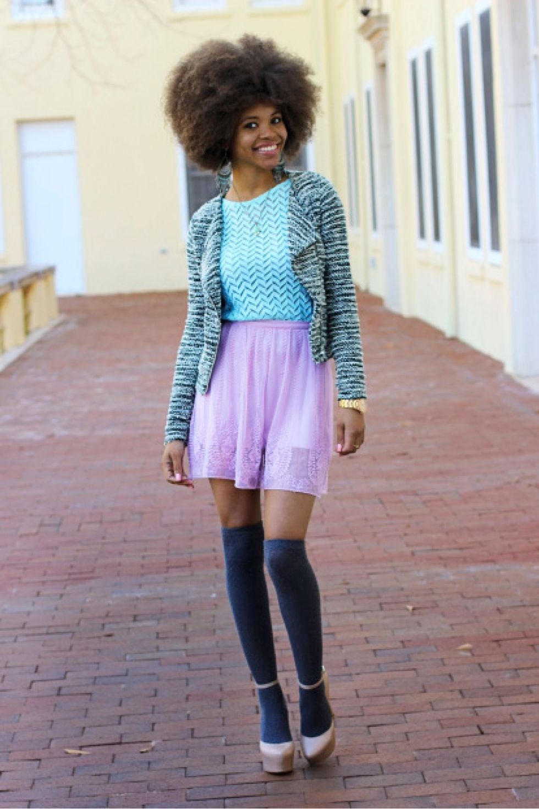

See ya next year, summer! Fall is about to hit in full force, bringing with it the start of a new semester of studying—and a whole new set of back-to-school outfits. For those of you whose year is dictated by the academic calendar, you know exactly what we’re talking about: Now’s about the time to put your vacay wardrobe on ice and start planning the kind of ensembles better suited to campus life than the beach. Generally, back-to-school outfits should make you feel confident, as well as make a good impression on your professors—or, OK, your chemistry lab partner.
Cute, classic, and comfy. This never fails combo can be worn a thousand differnt ways - just add eye-catching accessories and a bold makeup to give your look a pop.
Fashion from the '70s made a comeback in the '90s and has been sticking around ever since. The fashion of the '70s was all about color, exaggerated shapes and Bohemian styles. The trick to wearing '70s clothing without l ooking as if you are wearing a costume is to make your outfit look retro but modern at the same time. Mixing '70s clothes, such as those suggested below, with modern clothes can help give an outfit a '70s-inspired look without looking dated. Choose fabrics that were popular in the '70s such as cotton, denim and polyester and wear bright bold colors such as green, orange and yellow.
The No. 1 rule for entry-level print mixing: Stick to two patterns and simple silhouettes. Try playing with different textures and shapes. One way to help multiple prints look cool, not crazy, is to pick items that have the same aesthetic. Fun, flirty and feminine—no pattern says spring like florals. This season, the name of the game is big and bold. Think: less “Couch- Cover-Chic” and more “Dancing-on-the-Riviera.”
Whether you like buying into trends or prefer to stick with the basics, you need to add pastel to your wardrobe. Soft hues are a classic sprin g staple and are timeless enough that you can wear them year after yea r, yet when styled just right, they're also super trendy and cool. He re are the four hottest ways to wear them this year.
